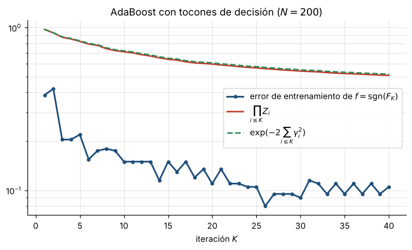

8. AdaBoost: origen del algoritmo y error de entrenamiento exponencialmente decreciente#
Enunciado
Sean \((y_n,\bx_n)\), \(n=1,\dots,N\), con \(y_n\in\{-1,1\}\), clasificadores base \(\phi(\cdot;\theta)\in \{-1,1\}\), \(F_i=\sum_{k\le i}a_k\phi_k\) con \(\phi_k=\phi(\cdot;\theta_k)\) y \(f=\sgn(F_K)\) (con \(\sgn(0)=+1\)). Con \(P_i=\sum_n\omega_n^{(i)}\Ind_{[y_n\phi_i(\bx_n)<0]}\) (error ponderado), demostrar:
(A) Origen del Algoritmo 5.1. Los pasos \(\omega_n^{(i)}\), \(\theta_i\), \(a_i=\frac12\ln\frac{1-P_i}{P_i}\) y \(Z_i\) resultan de minimizar de forma voraz la pérdida exponencial \(\sum_ne^{-y_nF_i(\bx_n)}\).
(B) Convergencia exponencial. El error de entrenamiento \(L_S(f)=\frac1N\sum_n\Ind_{[f(\bx_n)\neq y_n]}\) cumple
En particular, si \(P_i\le\frac12-\gamma\) para todo \(i\), \(L_S(f)\le e^{-2\gamma^2K}\).
Nota de interpretación
La casilla muestra el Algoritmo 5.1 y solo dice «Demostrar». Las notas dicen que la deducción de \(a_i\) y de los pesos «se demuestra fácilmente» (parte A) y, en los ejercicios de la Sec. 5.6, piden probar que el error de entrenamiento tiende a cero exponencialmente rápido (parte B). Se incluyen ambas.
Idea
(A) Con la pérdida exponencial, el problema voraz se factoriza en un peso por muestra y un único parámetro \(a\). (B) La pérdida 0-1 queda acotada por la exponencial, cuya suma es exactamente el producto de las constantes de normalización \(Z_i\).
Parte A: derivación del algoritmo#
Lema 3 (Pesos)
Para todo \(i\ge1\): \(\omega_n^{(i)}=e^{-y_nF_{i-1}(\bx_n)}/W_{i-1}\), con \(W_{i-1}=\sum_me^{-y_mF_{i-1}(\bx_m)}\) y \(F_0\equiv0\).
Demostración
Inducción. Para \(i=1\), \(\omega_n^{(1)}=1/N=e^0/N\). Si vale para \(i\), el algoritmo hace \(\omega_n^{(i+1)}=\omega_n^{(i)}e^{-y_na_i\phi_i(\bx_n)}/Z_i\) (líneas 5–8), luego \(\omega_n^{(i+1)}\propto e^{-y_nF_{i-1}(\bx_n)}e^{-y_na_i\phi_i(\bx_n)}=e^{-y_nF_i(\bx_n)}\) y, como los pesos suman 1, \(\omega_n^{(i+1)}=e^{-y_nF_i(\bx_n)}/W_i\).
Demostración: Elección de \(\theta_i\) (Ecs. 5.5–5.6)
Con \(F_i=F_{i-1}+a\phi\) y el Lema 3,
Como \(y_n\phi\in\{-1,1\}\), \(e^{-ay_n\phi}=e^{-a}+(e^a-e^{-a})\Ind_{[y_n\phi<0]}\). Con \(\sum_n\omega_n^{(i)}=1\):
Para \(a>0\), \(e^a-e^{-a}>0\); así, minimizar en \(\theta\) equivale a minimizar el error ponderado \(P(\theta)\), sin importar \(a\): \(\theta_i=\arg\min_\theta P(\theta)\) y \(P_i=P(\theta_i)\).
Demostración: Elección de \(a_i\)
Con \(\theta_i\) fijo, \(J/W_{i-1}=g(a):=(1-P_i)e^{-a}+P_ie^a\). Entonces \(g'(a)=-(1-P_i)e^{-a}+ P_ie^a\) y \(g''(a)>0\), luego \(g\) es estrictamente convexa y su mínimo cumple \(e^{2a}=\frac{1-P_i}{P_i}\), es decir
(Si \(P_i>\frac12\) basta cambiar \(\phi_i\) por \(-\phi_i\), cuyo error es \(1-P_i<\frac12\).)
Lema 4 (Valor de \(Z_i\))
\(Z_i=\sum_n\omega_n^{(i)}e^{-y_na_i\phi_i(\bx_n)}=g(a_i)=2\sqrt{P_i(1-P_i)}\).
Demostración
Los puntos bien clasificados pesan \(1-P_i\) y se multiplican por \(e^{-a_i}=\sqrt{P_i/(1-P_i)}\); los mal clasificados pesan \(P_i\) y se multiplican por \(e^{a_i}=\sqrt{(1-P_i)/P_i}\). Luego \(Z_i=(1-P_i)\sqrt{\frac{P_i}{1-P_i}}+P_i\sqrt{\frac{1-P_i}{P_i}}=2\sqrt{P_i(1-P_i)}\).
Esto justifica todas las líneas del algoritmo: los pesos del Lema 3, el \(\theta_i\) que minimiza \(P_i\), \(a_i\), y \(Z_i\) como constante que renormaliza los pesos. Además, con los nuevos pesos el error de \(\phi_i\) es \(P_ie^{a_i}/Z_i=\frac12\), de modo que \(\phi_i\) ya no aporta información en la siguiente ronda.
Parte B: el error de entrenamiento#
Demostración de (B)
Paso 1 (suma de la pérdida exponencial). Desenrollando la recursión de pesos desde \(\omega_n^{(1)}=1/N\),
Sumando en \(n\) (los pesos suman 1): \(\ \frac1N\sum_{n=1}^Ne^{-y_nF_K(\bx_n)}=\prod_{i=1}^KZ_i\).
Paso 2 (0-1 \(\le\) exponencial). Si \(f(\bx_n)\neq y_n\) entonces \(y_nF_K(\bx_n)\le0\) (con \(\sgn(0)=+1\)), así que \(e^{-y_nF_K(\bx_n)}\ge1=\Ind_{[f(\bx_n)\neq y_n]}\); si \(f(\bx_n)=y_n\), \(0\le e^{-y_nF_K(\bx_n)}\). Promediando y usando el Paso 1,
Paso 3. Por el Lema 4 y \(P_i=\frac12-\gamma_i\): \(4P_i(1-P_i)=4(\frac12-\gamma_i)(\frac12+\gamma_i)=1-4\gamma_i^2\), luego \(Z_i=\sqrt{1-4\gamma_i^2}\).
Paso 4. Como \(1-x\le e^{-x}\) para todo \(x\) (la recta tangente a \(e^{-x}\) en 0 queda por debajo de la curva convexa), \(\sqrt{1-4\gamma_i^2}\le\sqrt{e^{-4\gamma_i^2}}=e^{-2\gamma_i^2}\). Multiplicando sobre \(i\): \(\prod_iZ_i\le\exp(-2\sum_i\gamma_i^2)\).
Corolario: convergencia exponencial
Si cada clasificador base es ligeramente mejor que el azar, \(P_i\le\frac12-\gamma\), entonces \(L_S(f)\le e^{-2\gamma^2K}\). Como \(L_S(f)\in\{0,\frac1N,\frac2N,\dots\}\), el error es exactamente 0 en cuanto \(e^{-2\gamma^2K}<\frac1N\), es decir \(K>\dfrac{\ln N}{2\gamma^2}\). Ejemplo: \(N=200\), \(\gamma=0.1\) da \(K\ge265\). La cota es sobre el error de entrenamiento; no dice nada del error de prueba.
Comprobación numérica#
El siguiente código implementa el Algoritmo 5.1 con tocones de decisión sobre datos ruidosos (\(N=200\)) y verifica la cadena (13) en cada iteración.
K P_K error entr. ∏Z_i exp(-2Σγ²)
1 0.385 0.385 0.973 0.974
5 0.372 0.220 0.822 0.829
10 0.409 0.150 0.709 0.719
20 0.435 0.110 0.596 0.606
30 0.434 0.090 0.540 0.549
40 0.452 0.105 0.508 0.517

Figura 5. AdaBoost con tocones de decisión sobre datos ruidosos (\(N=200\)). La cota \(\prod Z_i\le e^{-2\sum\gamma_i^2}\) se cumple en cada iteración; aquí es holgada porque \(\gamma_i\) es pequeño.